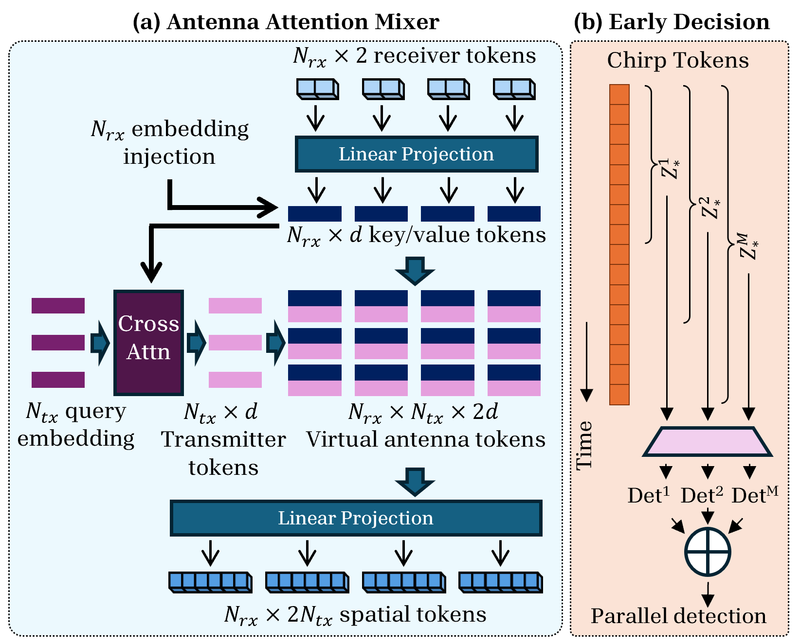
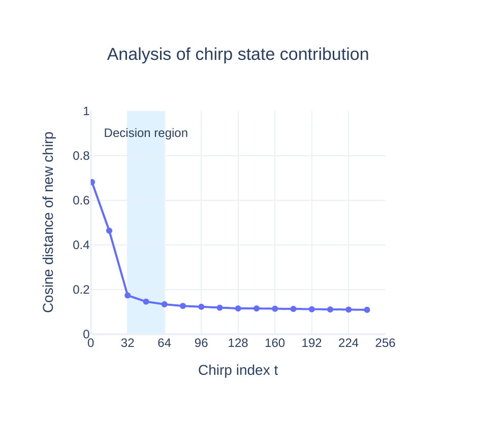
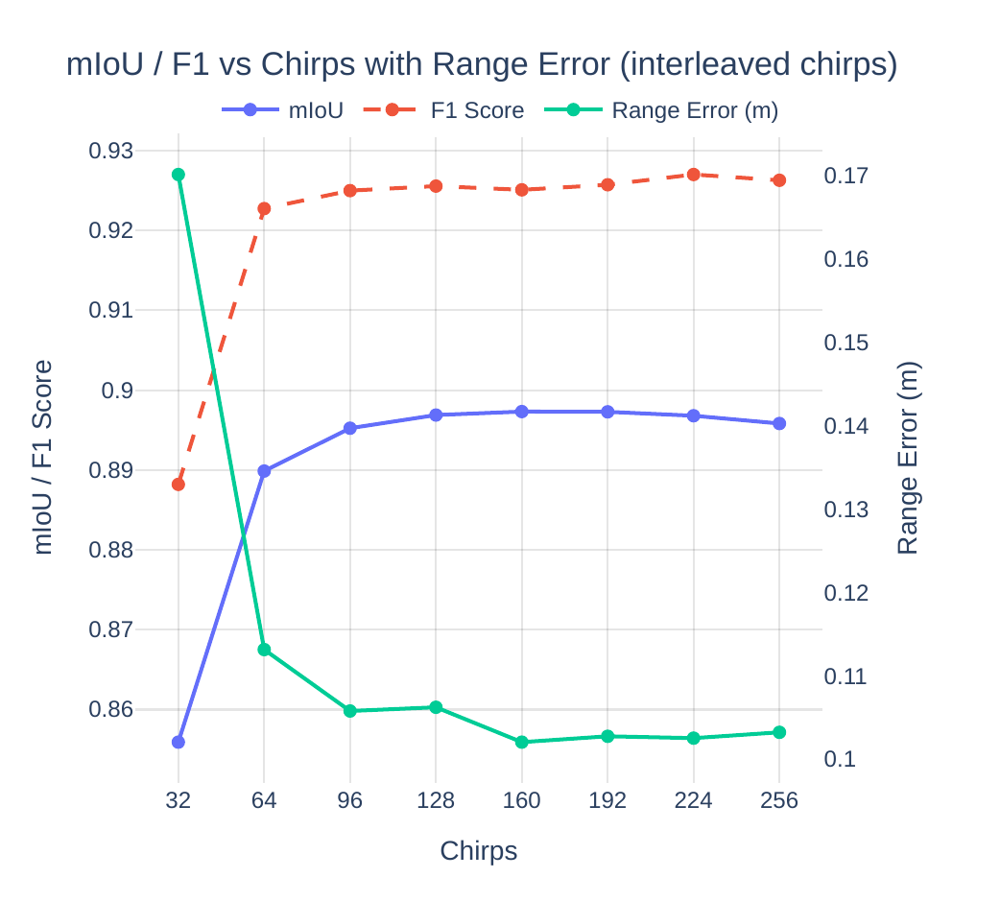
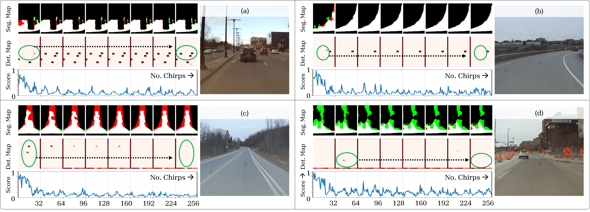
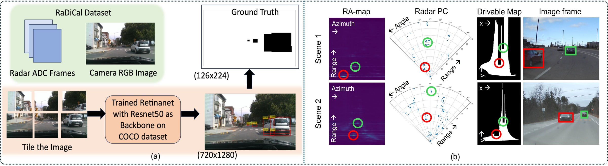

RAVEN: Radar Adaptive Vision Encoders
for Efficient Chirp-wise Object Detection
and Segmentation


Abstract
We introduce RAVEN, a deep learning architecture for processing frequency-modulated continuous-wave (FMCW) radar data designed for high computational efficiency. RAVEN reduces computation by using a learnable antenna mixer module on independent receiver state-space encoders (SSMs) to compress the virtual MIMO array into a compact set of learned features, and by performing per-chirp inference with a calibrated early-exit rule, so the model reaches a decision using only a subset of chirps in a radar frame.
These design choices yield up to 170× lower computation and 4× lower end-to-end latency than conventional frame-based radar backbones, while achieving state-of-the-art detection and BEV free-space segmentation performance on automotive radar datasets.
What are we trying to do?
Modern automotive radar pushes for higher sensing resolution — more channels, wider chirp bandwidth, faster sampling. Better resolution catches smaller objects and finer geometry, but it also blows up the radar cube: more channels, more chirps, more samples per frame. The downstream cost is more computation, more data, and higher latency. RAVEN's goal is to deliver high sensing resolution while keeping computation and latency low.


Method
Design Motivation
RAVEN's encoder is built directly around the signal and array physics of FMCW MIMO radar, not as a generic time-series model. Each target generates a beat frequency tied to its range and Doppler, and the receiver array encodes angle through deterministic phase shifts across antennas. Many sequential encoders collapse this structure by mixing receiver channels too early, discarding the relative phase differences that carry angular information. RAVEN avoids that by keeping each receiver independent and using a lightweight cross-antenna attention module to recombine them — a learned beamformer that recovers virtual-MIMO cues without ever building full range–angle–Doppler tensors.

Sub-frame Decision
Doppler resolution saturates well before the full radar frame is consumed, so RAVEN is trained with multi-prefix supervision — every chirp prefix is decoded and supervised against the same ground truth, making early predictions task-faithful. At inference, we measure the novelty of each new chirp via cosine distance to earlier states; once that distance falls below a calibrated threshold, the latent dynamics have saturated and RAVEN exits early.


Results
vs. TransRadar
latency
(0.35M vs. 4.25M)
sub-frame
Qualitative Results
In structured multi-vehicle scenes, early chirps form coarse hypotheses that later chirps refine into stable detections, and inconsistent early "hallucinations" are naturally suppressed as more chirps accumulate. Cluttered or noisy scenes expose the limits of early-stage inference, where the chirp-similarity signal becomes erratic when the underlying data quality is poor.

Datasets
We evaluate on two public automotive radar benchmarks. RaDICaL provides synchronized 77 GHz FMCW radar (4 RX × 2 TX TDM-MIMO) with stereo RGB-D and IMU; labels come from synchronized camera detections. RADIal contains roughly two hours of synchronized driving with a 12 TX × 16 RX DDM imaging radar (192 virtual antennas), with vehicle centroids and drivable-area masks from LiDAR.

Supplementary Videos
Qualitative video result on a real driving sequence. The top-right inset shows the RAVEN output (BEV detection / segmentation) running chirp-wise alongside the RGB feed, with the orange box marking the network's vehicle prediction.
Citation
If you find RAVEN useful in your research, please consider citing:
@inproceedings{sen2026raven,
title = {RAVEN: Radar Adaptive Vision Encoders for Efficient
Chirp-wise Object Detection and Segmentation},
author = {Sen, Anuvab and Mohammad, Mir Sayeed and
Mukhopadhyay, Saibal},
booktitle = {Proceedings of the IEEE/CVF Conference on Computer
Vision and Pattern Recognition (CVPR)},
year = {2026},
note = {Highlight}
}